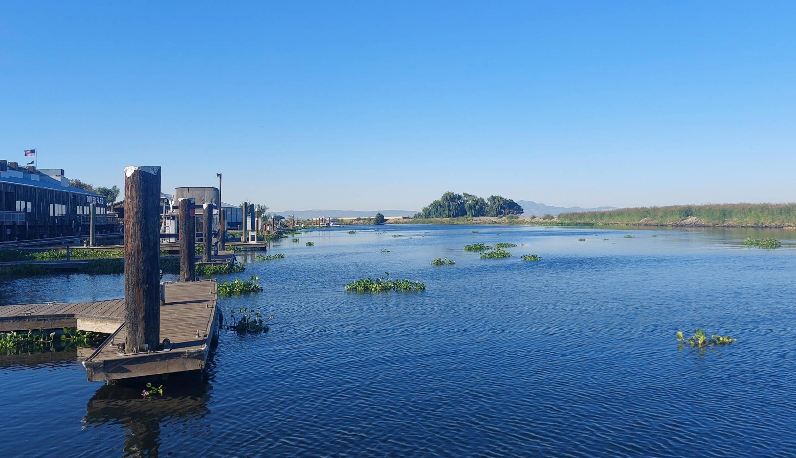

An Overview
Imagine a place where there are cabins in all sort of unique designs, from studio cabins, to large cabins, or even a trailer park. Well, you definitely get that here at Jellystone Cabin Park in Lodi California. This park is AWESOME for a weekend getaway with friends or family, or a full on solo camping adventure. Located near the Sacramento River, this park offers a very mild climate year round, making it a great destination no matter the season. Apart from the fogginess that settles in during the mornings of winter, but that still adds to the charm of the place! The park is well maintained, and well equipped with a Basketball court, a playground, a Volleyball net, a swimming pool/hot tub, and my favorite: a giant jumping pillow! There is also a fun activity center where children can do anything they want from arts and crafts, dance nights, LASER TAG, and even carnival games. The cabins themselves were extremely cozy, well furnished, and had all the amenities you would need for a comfortable stay, including a wall AC unit which included heating, which was really nice for the chilly nights. There were kitchen utensils available for cooking, and the beds were super comfy. Overall, I had an amazing time at Jellystone Cabin Park and would highly recommend it to anyone looking for a fun and unique camping/glamping experience.



Pictures of the Park.
What We Did
My family and friends and I took this vacation for granted, and we busted out all the fun activities the park had to offer:
- We used the giant jumping pillow for hours on end, competing to see who could jump the highest.
- We played basketball and Badminton, utilizing the courts available.
- We swam in the pool, which was HEATED, so it was perfect for the chilly weather (30 degrees fahrenheit).
- We explored the nearby Sacramento River, conducting a mini interview with the fishermen there to learn about their fishing journey.
- We played LASER TAG in the activity center, which was an absolute blast.
- We roasted marshmallows and made s'mores by the campfire, singing karaoke songs.
- We grilled out our own food at the BBQ pits available, which was delicious. We made chicken tandoori, corn, cottage cheese skewers, and grilled pineapple.
Here are some pictures from our fun-filled weekend!
Snapshots from our weekend getaway.
My Advice for Travelers
- In my opinion, Jellystone Cabin Park is best at Summer/Spring, sure I mention how it is manageable during every season, but summer and spring is when you can take full advantage of the pool and outdoor activities
without worrying about the cold. PLUS, the waterpark only opens up during spring break which starts around the end of March in the Sacramento/San Joaquin area.
- The park normally is not filled to capacity during the offseason (winter), so if you're planning to go during that time, there is no need to hassle and book the cabins in advance, there are plenty of
options available. However, if you're going during the summer, I would recommend booking at least a month in advance to ensure you get the cabin of your choice.
- If your traveling with a lot of kids, and friends, I suggest booking the "Delta Deluxe Cabin" or similar. Since they are equipped with a full bedroom, a loft area which is PERFECT for kids, and
a full kitchen and living area. This cabin type is perfect for families or groups of friends looking to have a fun and comfortable stay.
- I am not quite sure about the RV spots, and those options, but if you're planning on booking an RV spot, I would recommend booking one near the activity center area so you can have easy access to
all the fun activities, and amenities available.
- There is a shop located near the entrance at the park which sells all sorts of stuff including firewood. Please make sure to buy firewood and burn it efficiently, as it dies off pretty quickly
and is pretty expensive.
- For the cancellation policies, please make sure to visit their official website, here is the link
for your convenience: Jellystone Park Cancellation Policies
- Overall, just have fun and make the most of your time at Jellystone Cabin Park! It's a unique and enjoyable experience that you won't forget.